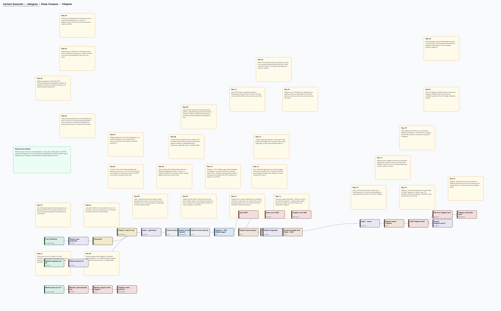
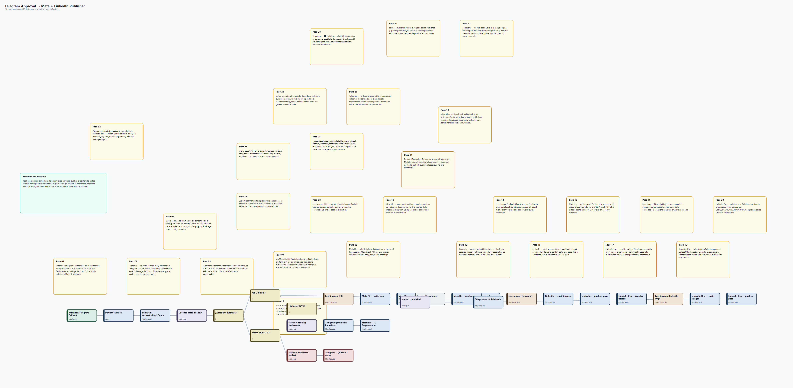
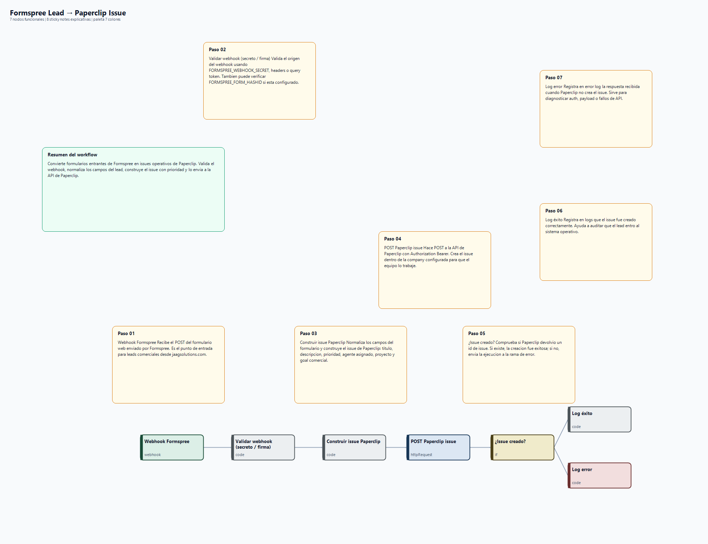

JAAGSOLUTIONS - previews graficos de workflows n8n
Cajas azules = nodos funcionales. Notas amarillas/verdes = Sticky Notes agregadas al canvas. Flechas = conexiones entre nodos funcionales.
Content Generator — Ideogram + Sharp Compose → Telegram
30 nodos funcionales | 31 sticky notes | 4540x2822 px

Telegram Approval → Meta + LinkedIn Publisher
28 nodos funcionales | 29 sticky notes | 4760x2332 px

Formspree Lead → Paperclip Issue
7 nodos funcionales | 8 sticky notes | 2020x1552 px
